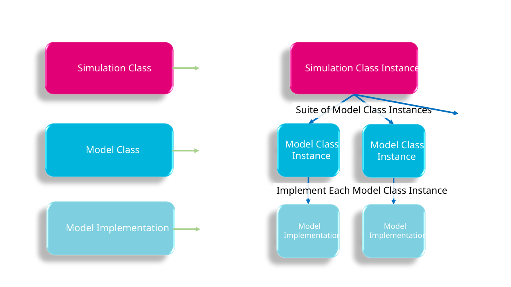

| Simulation Class Instance | Potential Uses |
|---|---|
Two Dimensional Hydrodynamics (2D HD) |
Simulation of 2D hydrodynamic use cases such as:
|
Three Dimensional Hydrodynamics (3D HD) |
Simulation of 3D hydrodynamic use cases which do not require the simulation of salinity, temperature and density effects such as:
|
Advection Dispersion (AD) |
Simulation in 2D or 3D with salinity, temperature and/or non-transformative tracers for use cases such as:
|
Sediment Transport (ST) |
Simulation of coastal, estuarine, riverine, lake and catchment sediment transport processes for use cases such as:
|
Water Quality (WQ) |
Simulation of coastal, estuarine, riverine, lake and catchment transformative water quality processes for use cases such as:
|
Particle Tracking (PT) |
Discrete particle tracking for use cases such as:
|
2 Architecture
2.1 Overview
This chapter describes the architectural structure of TUFLOW FV and defines the organising framework used throughout the model construction chapters. The architecture establishes how simulation components are grouped, named and related, providing a consistent structure for locating commands, inputs and configuration options.
The content of this chapter is conceptual in nature and does not describe specific configuration steps or execution procedures. The material presented is intended to support understanding of the overall model structure, including how individual components relate to one another and how supporting information is distributed across chapters and appendices. Information required to configure and run simulations is provided in subsequent model construction chapters.
Instructions for the use of any interactive components included in this section are provided in the manual overview.
2.2 Simulation Tiers
A TUFLOW FV simulation is comprised of three simulation tiers as illustrated in Figure 2.1. Each TUFLOW FV simulation comprises:
- Tier 1 — Simulation class: A user defined simulation class instance (Section 2.2.1)
- Tier 2 — Model classes: A suite of model class instances associated with the simulation class (Section 2.2.2)
- Tier 3 — Model implementations: A selected implementation for each model class instance (Section 2.2.3)

2.2.1 Tier 1: Simulation Class
A simulation class defines the type of TUFLOW FV model being constructed and the modelling objective it is intended to address. It determines which physical and numerical processes are active in the simulation and, by extension, which model components must be configured. The available simulation classes and their typical applications are summarised in Table 2.1, which can be used to identify the appropriate simulation class for a given modelling problem.
Simulation classes are cumulative: more advanced classes extend the capability of simpler classes, with the 2D Hydrodynamic (2D HD) simulation class providing the foundation for all other simulation classes. The dependency relationships between simulation classes are summarised in Table 2.2. Each simulation class has a corresponding model construction chapter.
| Simulation Class Instance | Simulation Class Dependencies |
|---|---|
2D HD |
Not applicable - 2D HD is the fundamental simulation class |
3D HD |
2D HD |
AD |
2D HD or 3D HD |
ST |
AD |
WQ |
AD or ST |
PT |
Can be run on any of the above simulation classes |
2.2.2 Tier 2: Model Class
Each simulation class (Tier 1) is associated with a defined suite of model classes (Tier 2). For a given simulation class, individual model classes may be either required, conditionally required or optional, and this status is identified consistently throughout the model construction chapters. As simulation classes build on one another, the underlying model class suites expand, with model classes introduced in earlier simulation classes reused or extended in later classes.
Model classes represent discrete physical or numerical components of a simulation and form the primary organisational units of the model construction chapters. The model class suites associated with each simulation class are summarised in Table 2.3 and illustrated in Figure 2.3.
| Simulation Class | Model Class Suite |
|---|---|
2D HD |
|
3D HD |
2D HD Simulation Class plus: |
AD |
2D HD or 3D HD Simulation Class plus: |
ST |
AD Simulation Class plus: |
WQ |
AD or ST Simulation Class plus: |
PT |
Any of the above simulation classes plus: |
2.2.3 Tier 3: Model Implementations
Model implementations (Tier 3) configure a model class (Tier 2). Each model class can select only one model implementation. Available model implementations are summarised in Table 2.4.
| Model Class | Model Implementation |
|---|---|
Coordinate Reference Frame |
|
Spatial Order (optional) |
|
Hardware (optional) |
|
Simulation Time Settings |
|
Computational Timestep |
|
Wetting And Drying (optional) |
|
Bottom Drag |
|
Horizontal Mixing |
|
Wind Stress (optional) |
|
Computational Mesh |
|
Bathymetry |
|
Materials |
|
Initial Conditions (optional) |
|
Boundary Conditions |
|
Hydraulic Structures |
|
Model Output |
|
Vertical Mixing |
|
Salinity (optional) |
|
Temperature (optional) |
|
Tracer (optional) |
|
Atmospheric Heat Exchange (optional) |
|
Sediment |
|
Sediment Configuration |
|
Water Quality |
|
Water Quality Configuration |
|
Particle Tracking Configuration |
|